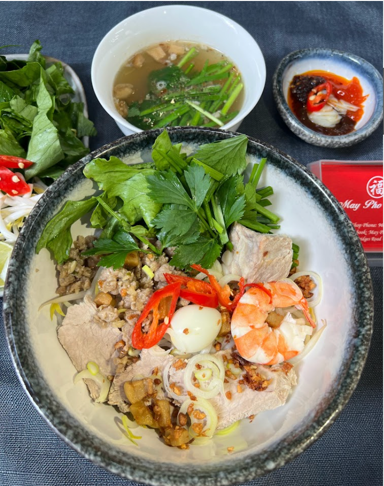
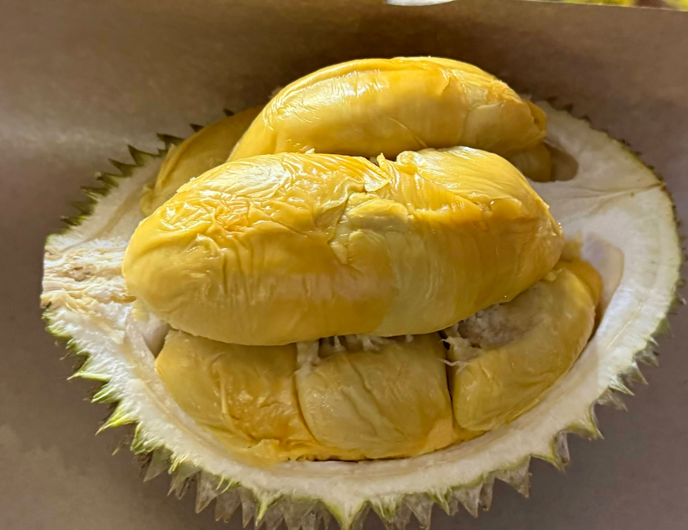

The Best Food I've Had in Singapore and Johor Bahru (Continuously Updated)
Contents
[NOTE] Updated December 29, 2025. This article may have outdated content or subject matter.
The Best Food I’ve Had in Singapore and Johor Bahru (Continuously Updated)
Because my partner loves to eat, and although as a programmer I’m not particularly skilled in culinary matters, I am very professional when it comes to researching restaurants. BTW: The pictures are taken from Google Maps, so if there are any copyright issues, please contact me for removal.
Singapore
May Pho Culture (Vietnamese Pho)
Address: 150 South Bridge Rd, #01-16, Singapore 058727
Recommendation: The broth at this Vietnamese pho restaurant is rich and flavorful, with a complex taste. The restaurant provides fresh Vietnamese herbs (basil leaves) that customers can pick and add to their pho, creating a fragrant aroma that perfectly blends with the rich broth. It feels even better than what I’ve had in Vietnam, highly recommended for everyone to try.

Bentong Durian Pte Ltd (Mao Shan Wang Durian)
Address: 241 Holland Ave, #01-02, Singapore 278976
Recommendation:
- Thoughtful Service: They use B-grade (whole fruit) durians, not allowing customers to choose, but directly opening the shell and packing them. The box I bought for 45 SGD contained two B-grade Mao Shan Wang durians, preventing customers from getting durians with fewer segments, showing full consideration for the customers.
- Quality Assurance: They have the characteristics of a top-tier durian stall—never opening at the start of the durian season. Since many Mao Shan Wang durians are not fully ripe at the beginning of the season, they only open when the durians are at their best, ensuring every durian is in perfect condition.

Muthu’s Curry
Address: 138 Race Course Rd, #01-01, Singapore 218591
Recommendation: It’s clean and hygienic, and their Mango Lassi is particularly delicious. The Naan is also great, and the Chicken Tikka is top-notch.

Cafe USAGI Tokyo
Address: 3 Temasek Blvd, #02-615A, Singapore 038983
Recommendation: My favorite is their sea salt ice cream wrapped in mochi. I always have a serving whenever I visit Suntec City.

Janggut Laksa @Queensway Shopping Centre
Address: 1 Queensway, #01-59, Singapore 149053
Recommendation: This Laksa is the best I’ve had in Singapore, ranked top 1 among locals. I discovered it while buying a folding bike and noticed many people queuing. It was truly delicious.

Johor Bahru
Ong Shun Seafood Restaurant
Address: 67, Jalan Abdul Samad, Kampung Bahru, 80100 Johor Bahru, Johor Darul Ta’zim, Malaysia
Recommendation: This is probably the best seafood restaurant I’ve ever eaten at. It’s popular among locals, has a nice environment, and is reasonably priced. I recommend the black pepper crab, butter crab, and salt and pepper shrimp. The most impressive is the incredibly fresh and sweet taste, even with the strong flavor of black pepper crab, the crab meat remains super fresh and sweet, which is truly remarkable.

Author xiantang
LastMod 2025-12-29 (ec4a6f4b)